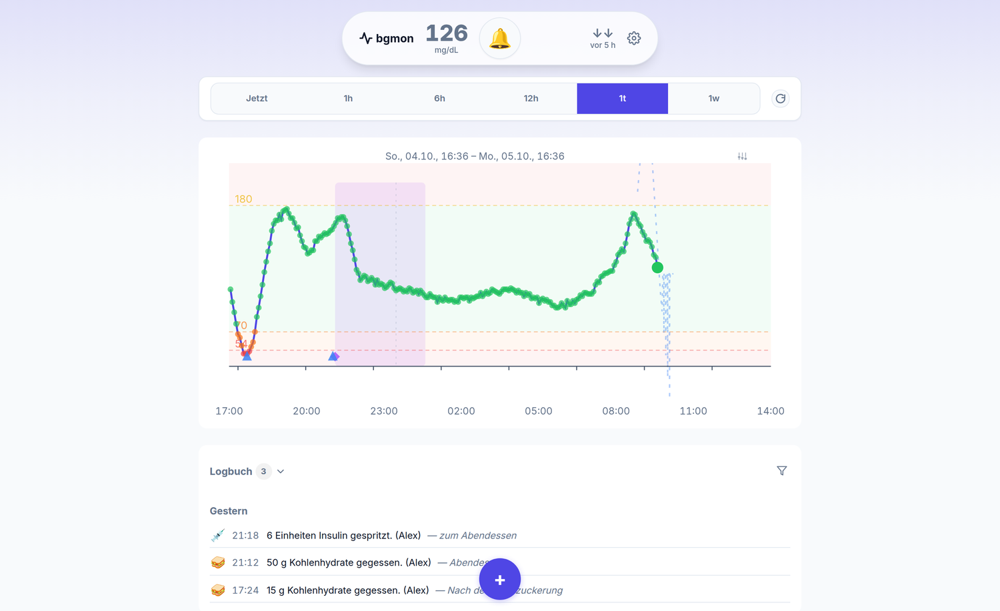
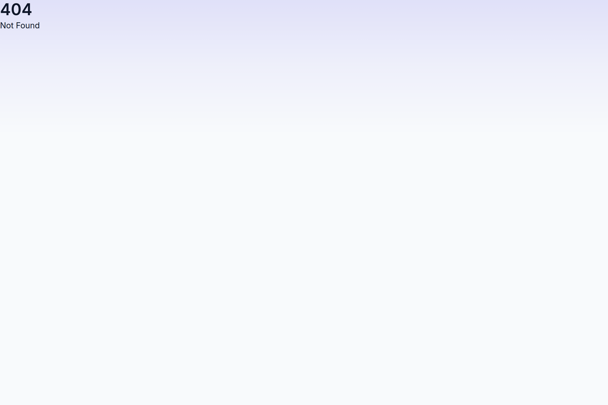
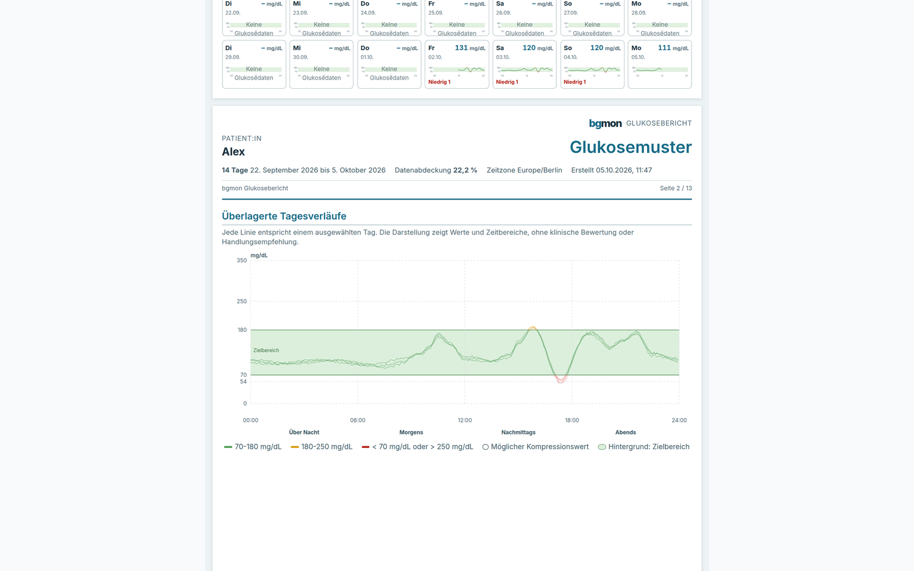
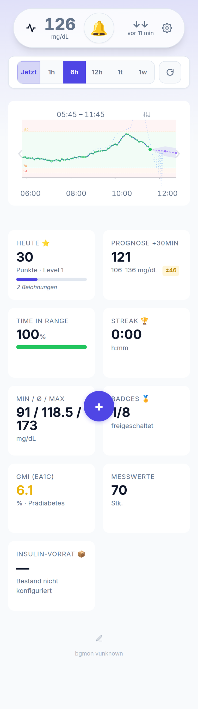

Die Kurve ist da, der Blick fehlt
Ein CGM-Sensor misst alle paar Minuten. Wer nicht 24 Stunden auf den Bildschirm schaut, erfährt eine Unterzuckerung trotzdem — nur zu spät.
Selbstgehostet · MIT · Flask & SvelteKit
bgmon ist ein Echtzeit-Monitoring für kontinuierliche Glukosemessung (CGM). Es holt die Werte vom Sensor, bewertet sie gegen eigene Schwellwerte und alarmiert per Push oder Telefonanruf — für Patient und Pflegende, auch wenn die App gar nicht offen ist.

Die eigentliche Frage ist selten „wie hoch ist der Wert gerade“, sondern „muss jetzt jemand etwas tun“ — mitten in der Nacht, während einer Schicht oder fünf Minuten vor dem Frühstück.
Ein CGM-Sensor misst alle paar Minuten. Wer nicht 24 Stunden auf den Bildschirm schaut, erfährt eine Unterzuckerung trotzdem — nur zu spät.
Ein Alarm im Handy, das auf dem Nachttisch liegt, wird überhört. bgmon ruft an, wenn es ernst wird — und zwar konfigurierbar pro Schwellwert.
Für die Nachbetreuung zählt nicht der einzelne Wert, sondern das Zeitmuster. Der AGP-Bericht macht daraus ein PDF, das Diabetologen kennen.
Alles auf einem eigenen Server, mit eigener Datenbank. Keine Fremd-API zwischenschalten — außer dem CGM-Dienst, aus dem die Messwerte stammen.
Aktueller Wert, Trendpfeil und Verlaufsgraph in mg/dL oder mmol/L, mit TIR-Statistik und Now-Mode, der der Uhrzeit folgt.
Automatische Abfrage alle 30 Sekunden über LibreLinkUp. Kommt nichts mehr, ist das ein eigener Alarmgrund — kein stilles Loch in der Kurve.
Kritisch niedrig, niedrig, hoch, kritisch hoch — eigene Grenzwerte pro User, mit Snooze gegen Alarm-Spam.
Web-Push über VAPID funktioniert auch bei geschlossener PWA. Für kritische Werte lässt sich zusätzlich ein Twilio-Anruf mit deutschem Sprachtext und Retry einrichten.
Ein Sensor-Timeout wird als eigener Schwellwert behandelt: konfigurierbar, automatisch aufgelöst, sobald wieder Werte eingehen.
Ein Lese-Link mit eigenem Token für Angehörige — ohne Login, ohne Schreibrecht, öffentlich teilbar.
Kohlenhydrate, Insulin, Basalrate und Notizen in einem Protokoll, mit KI-Schätzung der KE aus Text oder Foto und Dosisvorschlag aus KE-Faktor und Korrektur — exakt gerechnet, in 0,5-Schritten übernommen.
Schnellinsulin, Basalinsulin, Spritzenköpfe und Sensoren im Blick: aus Bestand und tatsächlichem Verbrauch wird berechnet, wie viele Tage der Vorrat noch reicht — inklusive Nachschub-Warnung.
Schicht-Management für den Nachtdienst, dazu ein Nachtprofil mit reduzierter Helligkeit und vereinfachter Bedienung.
Zeit im Zielbereich als Wochen- und Monatsstatistik, konsequente Eintragungen werden mit Streaks belohnt.
Offline-fähig über Service Worker, installierbar auf iOS, Android und Desktop.
Der Alarmweg ist getrennt vom Schwellwert konfigurierbar. Was im Klartext geht, kann über den eigenen Nutzungsweg laufen — und SNOOZE hält Nachtruhe heraus, ohne echte Ereignisse zu verschlucken.

bgmon bewertet nicht nur den aktuellen Wert, sondern den Verlauf davor. Fünf Muster werden erkannt und als eigener Hinweis im Dashboard angezeigt.
Anstiege über 100 mg/dL nach einer Mahlzeit.
Gegenregulation nach einer Unterzuckerung ohne Kohlenhydrat-Gabe.
Mehrere Korrekturgaben innerhalb der Wirkzeit, mit IOB-Berechnung.
Morgendlicher Anstieg ohne Nahrungsaufnahme zwischen 04:00 und 08:00 Uhr.
Der gefährliche Hypo→Hyper→Hypo-Zyklus im 4-Stunden-Fenster.
Falsch niedrige Werte durch Sensor-Kompression — erkannt über konstante Verläufe, starke Abfälle ohne Insulin und Boden-Plateaus.
Alle Schwellwerte der Mustererkennung sind in den Einstellungen anpassbar.
Das ambulante Glukoseprofil im FreeStyle-Libre-3-Format — der klinische Standard, den Diabetologen erwarten. Zehn Abschnitte, A4-Seitenaufteilung mit automatischen Umbrüchen, als PDF in einem Klick.

7.5KE, 11.5U) — über vier Spuren gestapelt, damit
sich gleichzeitige Einträge nicht überdecken.
Je Horizont eine eigene lineare Regression, trainiert auf den eigenen historischen Daten mit Walk-Forward-Cross-Validation. Eingangen sind 15 Signale — aktueller und gemittelter Wert, Steigung, Kohlenhydrate, Insulin, Basalrate, Korrekturfaktor und Tageszeit.
Im Dashboard erscheinen farbige Prognoselinien mit Konfidenzbändern. Ein Filter blendet historische Prognosen ein oder aus — so lässt sich nachprüfen, wie gut die Vorhersage von vor zwei Stunden war.
Training und Auswertung laufen aus den Einstellungen heraus und zeigen Fortschritt, Laufzeit und Restzeit. Die Auswertung stellt die Modell-Abweichung der Baseline „letzten Wert fortschreiben“ gegenüber und sagt, wie belastbar der Wert ist.
Die Prognose ist display-only: keine Alarmierung und keine Behandlungsempfehlung.

Mehrere Instanzen sind vorgesehen: Die Leader-Election über eine
scheduler_leader-Tabelle verhindert doppelte Alarm-Jobs, und die
Session-Auth läuft über sichere Cookies mit bcrypt-gehashten Passwörtern.
Aus Repository klonen, Container starten, Migrationen anwenden. Für Push und Anrufe werden VAPID-Keys und ein Twilio-Account ergänzt.
git clone https://github.com/mcfetz/bgmon.git
cd bgmon
cp .env.example .env
# SECRET_KEY, BGMON_DATABASE_URL, BGMON_PUBLIC_BASE_URL setzen
docker compose up -d --build
docker compose exec backend flask predictor train# VAPID-Keys für Web-Push (einmalig)
./scripts/generate-vapid-keys.sh --writeKein SaaS, keine Nutzungsgrenze, keine Daten bei fremden Anbietern. Python, PostgreSQL und Docker genügen.